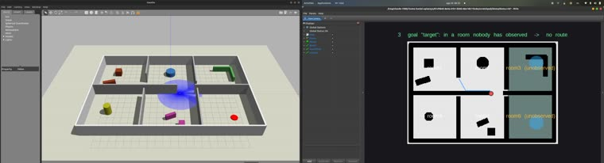
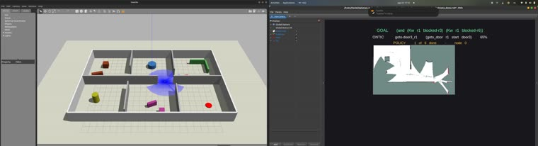
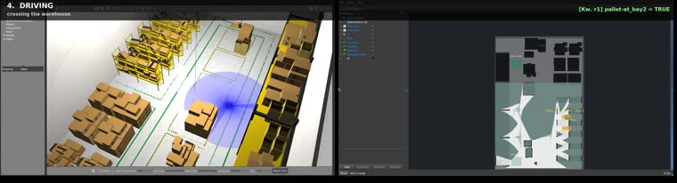
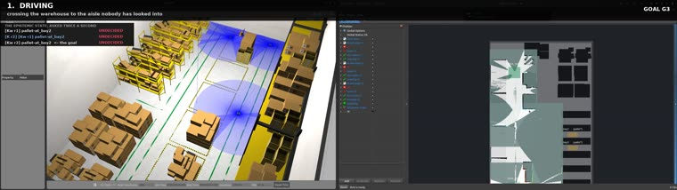
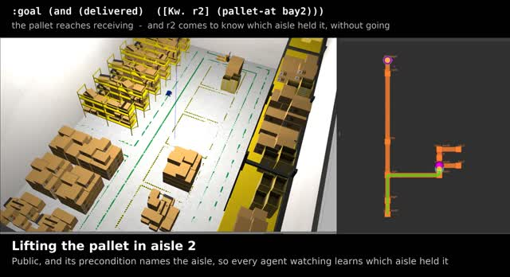
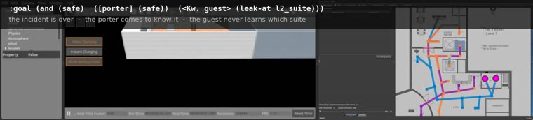

Recorded runs · ROS 2 · simulation
Every run on this site is a recorded execution of a stated problem, with the planner's own output beside it. They are grouped below by the domain they are built on, since several runs of one domain differ only in the goal, the size of the fleet, or the layer that drives the robots.
Domain
Six rooms and the doors between them, with an occupancy grid a robot measures as it goes. Movement is public-ontic and looking is semi-private-sensing. The frame is \(\mathrm{S5}_n\). Two runs use it: one asks what routing over a partially measured floor costs, and one states a mission whose goal is a modal formula.

Nine queries put to a μ-calculus route planner, separating reachability from the question of whether the agent could tell it had arrived. Cells nobody has observed are excluded from the fixed point, so the least fixed point halts at the mouth of an unmeasured corridor.

The same building with a goal stated in EPDDL. The plan is a policy, and the branch is taken on what the robot observes.
Domain
The RoboticsAcademy multi-robot Amazon warehouse exercise in its epistemic reading. A pallet stands in one of two aisles, nobody is told which, and pickup carries the modal precondition ([?i] (pallet-at ?z)), so a robot may lift it only where it knows it to be. Inspection is semi-private and every other action is public, which keeps the frame \(\mathrm{S5}_n\). Three runs use it, differing in the goal, the fleet size, and the layer driving the robots.

The mission executed for one robot, then two, then three, under Nav2. The third robot is where an announcement starts earning its place: watching a pickup settles the aisle, and watching an empty aisle settles nothing.

Three instances identical except for the modal depth of the goal. Second-order knowledge is sometimes free and sometimes costs an announcement, and the difference appears in the search before it appears in the plan.

The same domain executed by an RMF fleet in a world with no traffic-editor description of its own. The navigation graph and building map are derived from the floor plan and validated against the occupancy grid before use. Every relation stays reflexive and the model contracts from two worlds to one.
Domain
A leak in one of two suites on separate floors. The domain admits private-ontic change and quasi-private-announcement, so an agent that observes neither continues to hold what it last had reason to hold. The reachable frame is therefore \(\mathrm{KD45}_n\), and the transition out of \(\mathrm{S5}_n\) happens during execution. One run uses it so far.

Two robots dispatched to different floors by a single joint action, and a containment only the suite observes. The agents' knowledge is measured after every action: two of the three end holding beliefs the world contradicts, and each of those is attributable to one action.
Reading them
Each report of a run over a fleet carries the same two figures, generated from a replay of that run against the epistemic state. The first is a table of the run: the size |W| of the model the agents share, and for each agent the number |D| of worlds it still designates. |D| = 1 is knowledge of the proposition at issue and |D| > 1 is uncertainty. A cell marked in red is a perspective that has ceased to contain the world that is the case.
The second draws each agent's accessibility relation as a digraph over the worlds of the model at selected steps. Reflexivity is the property that makes knowledge factive, so a world that has lost its self-loop in an agent's relation is a world that agent excludes while it holds. The two figures together locate a false belief at the step and the agent that acquired it.